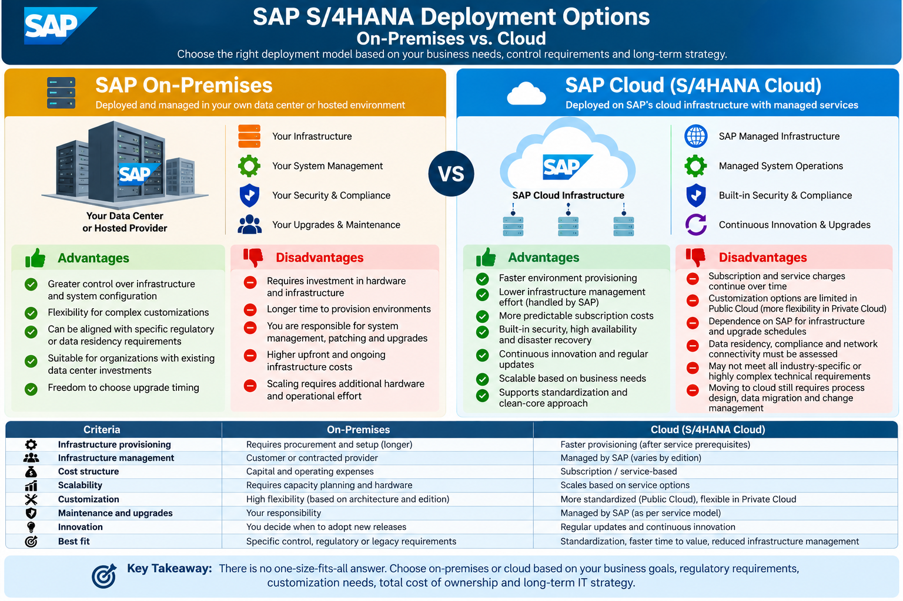

SAP S/4HANA • Deployment Strategy • Program Leadership
SAP S/4HANA Deployment: On-Premises vs. Cloud
Compare control, flexibility, cost structure, operational responsibility, and time to value to select a deployment model aligned with business strategy.
Selecting an SAP S/4HANA deployment model is a strategic business and operating-model decision—not simply an infrastructure choice. Organizations must balance control and customization against speed, standardization, operational responsibility, compliance, and long-term cost. The right choice depends on business requirements, the SAP edition and service model, existing investments, and the organization's ability to operate and evolve the platform.
1. Deployment options at a glance

SAP_S_4HANA_Deployment_Comparison.png in the same GitHub repository folder as this HTML file.SAP S/4HANA On-Premises
Definition: The SAP system is deployed in an organization's own data center or a hosting environment under an operating model where the customer retains substantial responsibility for infrastructure and technical operations.
Advantages
- Greater control over infrastructure, system configuration, and maintenance windows.
- Can support complex technical requirements and specific integration patterns, subject to the chosen architecture.
- May align with existing data-center investments, operating practices, or particular data-residency constraints.
- Organization can plan the timing of many technical changes and upgrades within supported product and maintenance policies.
Disadvantages and risks
- Requires infrastructure capacity, specialist skills, and ongoing operations capability.
- Hardware and environment provisioning may take longer.
- Customer or contracted provider typically manages more patching, upgrades, availability, backup, and disaster-recovery activities.
- Scaling can require additional capacity planning, procurement, and operational effort.
SAP S/4HANA Cloud
Definition: SAP S/4HANA is consumed through a cloud service model. The exact balance of standardization, extensibility, infrastructure management, and customer responsibility depends on the edition and contract.
Advantages
- Faster environment provisioning once service prerequisites are satisfied.
- Reduced customer effort for infrastructure operations in managed service models.
- Subscription or service-based commercial model can make costs more predictable, subject to usage and contract terms.
- Cloud capabilities can support scalability, availability, and regular innovation.
- Public Edition encourages standard processes and a clean-core approach; Private Edition may provide greater flexibility.
Disadvantages and risks
- Recurring subscription and service charges continue over the contract term.
- Customization and extensibility options differ by edition; requirements may need process redesign.
- Organizations depend on provider service commitments, maintenance windows, and release policies.
- Connectivity, identity, data residency, compliance, and integration design still require careful assessment.
- Moving to cloud does not remove the need for data migration, testing, change management, and process ownership.
2. Comparison by decision criteria
| Criteria | On-Premises | SAP S/4HANA Cloud |
|---|---|---|
| Infrastructure provisioning | Procurement and setup may take longer; depends on existing capacity and hosting arrangement. | Often faster after service prerequisites and provisioning steps are complete. |
| Infrastructure management | Customer or contracted provider has substantial responsibility. | Responsibility is shared according to cloud edition, service model, and contract. |
| Cost structure | Infrastructure capital costs plus operating, support, and lifecycle expenses. | Typically subscription or service-based charges, plus implementation, integration, and internal operating costs. |
| Scalability | Requires capacity planning and may require additional infrastructure. | Capacity and service scaling depend on the selected cloud offering and contractual limits. |
| Customization | Can offer broader technical flexibility, subject to SAP supportability and clean-core considerations. | Public Edition is more standardized; Private Edition provides different extensibility and configuration options. |
| Maintenance and upgrades | Customer/provider plans and executes more of the technical lifecycle. | More service operations may be managed by SAP; release and maintenance responsibilities vary by edition. |
| Innovation | Adoption timing is influenced by customer upgrade planning and supported product lifecycle. | Cloud release cadence can enable regular innovation; customers must prepare for relevant changes. |
| Compliance and residency | Can provide direct control over hosting location and controls, but compliance remains the customer's responsibility. | Assess region availability, contractual commitments, data processing, controls, and regulatory fit. |
| Best fit | Organizations with specific control requirements, suitable existing investments, or complex supported needs. | Organizations prioritizing managed services, standardization, scalability, and a cloud-oriented operating model. |
3. How to select the right deployment model
Consider on-premises when:
- There is a substantiated need for infrastructure-level control or a particular hosting arrangement.
- Existing investments and operating capabilities provide a credible total-cost and lifecycle advantage.
- Specific technical, integration, or regulatory requirements have been validated against the selected SAP product and support model.
- The organization can staff and govern system operations, security, backup, recovery, patching, and upgrades.
Consider SAP S/4HANA Cloud when:
- The business values standardized processes, faster provisioning, and a managed service model.
- The organization is willing to redesign processes to align with standard capabilities where practical.
- Cloud operating responsibilities, service commitments, release cadence, and integration requirements are acceptable.
- The business case supports subscription economics and the organization is ready for ongoing adoption and change.
4. Project implementation lifecycle
Whichever deployment model is selected, structure the implementation using the SAP Activate lifecycle. Tailor deliverables to the chosen SAP edition, transition approach, and project scope.
- Clarify business outcomes, scope, constraints, current landscape, and transformation drivers.
- Assess deployment options, edition fit, integration needs, regulatory constraints, and high-level total cost of ownership.
- Document assumptions, decision criteria, and major risks for executive approval.
- Set governance, workstreams, budget, integrated plan, environments, roles, and quality controls.
- Confirm cloud or infrastructure prerequisites, security and identity approach, data ownership, and vendor responsibilities.
- Establish change management, testing, migration, cutover, and support strategies.
- Run process workshops and confirm requirements against standard SAP capabilities.
- Agree configuration, approved extensions, integrations, reports, roles, and data requirements.
- Record design decisions and gaps; assess the cost and risk of each proposed deviation.
- Configure the solution and develop approved integrations, reports, and extensions.
- Execute unit, integration, regression, security, performance, and user acceptance testing as applicable.
- Profile and cleanse data; conduct mock migrations, reconciliation, cutover rehearsals, and defect triage.
- Verify business readiness, training, critical defect status, data reconciliation, cutover tasks, and support coverage.
- Conduct go/no-go governance and execute the approved cutover plan with named decision-makers.
- Monitor business-critical processes and maintain agreed recovery or contingency actions.
- Manage hypercare, incident prioritization, service transition, and operational acceptance.
- Monitor service levels, adoption, process performance, security, and benefits against baselines.
- Maintain continuous improvement and manage cloud releases or technical lifecycle changes through controlled governance.
5. Program Manager's responsibilities
- Strategic alignment: connect the deployment decision to business goals, operating model, risk appetite, and measurable outcomes.
- Business case and financial control: compare total cost of ownership, implementation costs, subscription or infrastructure expenses, contingency, and legacy retirement.
- Governance and decision-making: establish steering committee decisions, design authority, scope control, escalation paths, and accountable business owners.
- Integrated delivery: coordinate functional, technical, data, integration, security, testing, infrastructure/cloud, change, and operations workstreams.
- Risk and dependency management: maintain a RAID log; manage vendor commitments, connectivity, regulatory needs, environments, and critical-path dependencies.
- Quality and readiness: enforce fit-to-standard decisions, end-to-end testing, migration reconciliation, cutover rehearsals, and evidence-based go/no-go criteria.
- Stakeholder and change leadership: align executives, process owners, end users, regional teams, vendors, and support organizations; monitor training and adoption.
- Benefits realization: baseline and track process KPIs, service stability, productivity, cost, and business outcomes after go-live.
6. Common risks and practical controls
| Risk | Potential impact | Recommended control |
|---|---|---|
| Cloud/on-premises model selected without a full assessment | Unexpected cost, capability gaps, or rework. | Use documented fit-gap analysis, architecture review, and lifecycle TCO. |
| Excessive customization | Higher maintenance effort and upgrade complexity. | Apply fit-to-standard, design authority, extension principles, and formal exception approval. |
| Unclear shared responsibilities | Gaps in security, operations, backup, monitoring, or incident response. | Document a responsibility matrix and validate it against service contracts and operational procedures. |
| Data migration defects | Incorrect balances, disrupted transactions, or delayed go-live. | Assign data owners, cleanse early, run mock loads, reconcile totals, and obtain business sign-off. |
| Integration or network constraints | Failures across SAP and external systems. | Inventory interfaces, validate connectivity and identity, test end-to-end scenarios, and rehearse recovery. |
| Release or upgrade readiness overlooked | Unplanned testing, business disruption, or unsupported dependencies. | Maintain release calendars, regression coverage, change impact analysis, and business communications. |
| Low user adoption | Workarounds, productivity loss, and delayed benefits. | Use role-based training, super users, readiness checks, floor support, and adoption metrics. |
7. Program Manager's key takeaways
- Lead with business outcomes: choose the deployment model that best supports the target operating model and strategic objectives.
- Compare total cost of ownership: include implementation, subscriptions or infrastructure, internal skills, integration, upgrades, security, training, and legacy retirement.
- Validate the exact SAP edition: do not assume Public Cloud, Private Cloud, and on-premises have identical customization, release, or operational responsibilities.
- Make responsibilities explicit: document what SAP, the hosting provider, implementation partner, and customer each own.
- Protect fit-to-standard: approve deviations only when there is a clear business, regulatory, or competitive justification.
- Build readiness into the plan: migration reconciliation, end-to-end testing, training, cutover rehearsals, and support acceptance are decision gates—not end-of-project tasks.
- Plan for life after go-live: define service ownership, release management, continuous improvement, and benefits tracking from the start.
Final takeaway
There is no universal winner between SAP S/4HANA on-premises and cloud. On-premises may suit organizations that require greater infrastructure control and can sustain the operating model; cloud may suit organizations prioritizing managed services, standardization, and ongoing innovation. The Program Manager brings the decision to evidence: business fit, product edition, compliance, integration, readiness, lifecycle cost, and measurable value.
Success is not simply moving SAP to a different hosting model. It is delivering a secure, adopted, supportable solution that improves business performance.
Note: This article provides general program-management guidance. Confirm current SAP product capabilities, support policies, service descriptions, and contractual responsibilities with SAP and the relevant implementation or hosting partners before making a deployment decision.